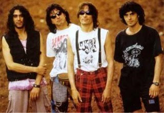

Bienvenido al sitio oficial de Extremoduro
Sobre la banda
Extremoduro es una banda española de rock urbano y rock transgresivo fundada en 1987 en Plasencia (Cáceres, Extremadura) por Robe Iniesta, quien ha sido su líder, vocalista, guitarrista y principal compositor.
Considerada una de las bandas más influyentes del rock español. Su música se caracteriza por letras poéticas, crudas y provocadoras, que mezclan lo marginal con lo literario, y que tratan temas como la libertad, el amor, la droga, la rebeldía y la vida cotidiana con un estilo directo y personal. Su música ha marcado a varias generaciones de seguidores del rock en España.
Historia
La banda comenzó su andadura a finales de los años 80 y alcanzó gran popularidad en los años 90 con álbumes como Agila y ¿Dónde están mis amigos?. Su propuesta musical rompía con los esquemas del rock español de la época.
A lo largo de más de 30 años de carrera, Extremoduro lanzó 13 álbumes de estudio y realizó innumerables conciertos memorables. En 2019, la banda anunció su separación tras la gira "Gira Inesperada", dejando un legado imborrable en la música española.
Miembros históricos
- Roberto Iniesta "Robe" - Voz y guitarra (1987-2019)
- Iñaki "Uoho" Antón - Guitarra (1994-2019)
- José Ignacio "Selu" Cantalapiedra - Batería (1997-2019)
- Miguel Colino - Bajo (2002-2019)
Logros destacados
- 13 álbumes de estudio publicados
- Múltiples discos de oro y platino
- Conciertos legendarios con entradas agotadas en minutos
- Influencia determinante en el rock español contemporáneo
- Legión de seguidores fieles a lo largo de tres décadas
Explora más
Descubre la discografía completa de Extremoduro y suscríbete a nuestra newsletter para recibir información sobre el legado de la banda.